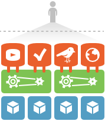
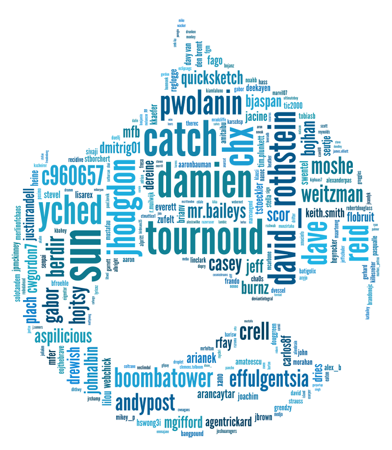

Introducción a Drupal
Qué es Drupal
- Gestor de contenidos modular y muy configurable.
- Ideal para crear sitios web dinámicos y con gran variedad de funcionalidades.
Qué es Drupal
Miles de módulos y diseños creados para Drupal.

Minimiza código a medida
Optimizando la eficiencia de portales
Drupal = Flexibilidad
- Una de las plataformas más flexibles
- Altamente personalizable

Drupal = Amplia comunidad profesional
- Drupal.org tiene más de 1 millón de usuarios
- 230 paises
- 181 idiomas
- Profesionalización = Usuarios cualificados
Drupal = Open Source
Código abierto
Continuo crecimiento y desarrollo
Última generación
Drupal = Open Source
- No pago de licencias
- Cambios de manera rápida
- Reducción de costes
- Escalable
- Solución de errores y mejora con más rapidez
Ventajas:
¡Es gratuito, no tiene licencia de uso y su código es abierto!
Drupal = Seguridad
Uno de los gestores de contenidos más seguros que existen ya que está construido con la seguridad en mente
Control total de la plataforma y un sistema de permisos basado en roles
Drupal = Seguridad
Drupal.org mantiene a un equipo dedicado exclusivamente a la seguridad

Drupal = Webs Importantes
-
Internacionales:
Warner Bros, Zynga, The Weather Channel, Mens Health, Le Figaro, Royal Mail, The Economist o la misma Casa Blanca -
Nacionales:
RAE, Kinepolis, Telemadrid, Museo Reina Sofía, Idealista News, McDonalds, Ayuntamiento de Castilla La Mancha, Parque de Atracciones de Madrid, Boing, Faunia, ... y cada día más.